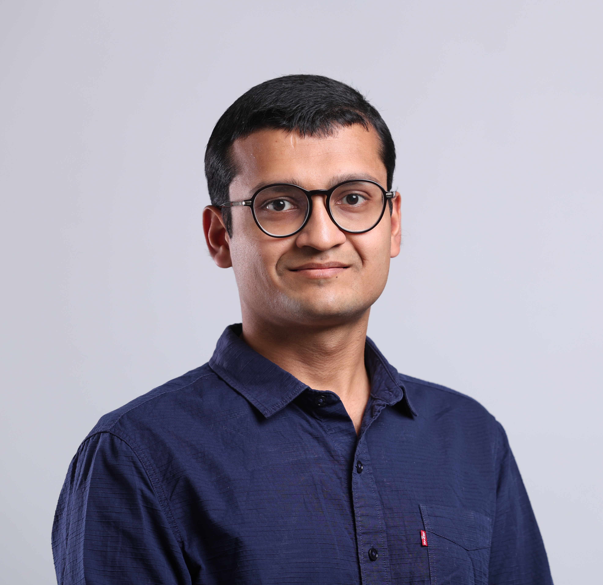

BITS Pilani · Rajasthan, India
Assistant Professor, BITS Pilani · Adjunct Faculty, IIIT Delhi
I consider myself a scientist before a computer scientist — interested in solving real-world problems, especially those specific to developing countries like India. My research spans Generative AI, Large Language Models, Agentic AI, and Computing Education, with forays into Human-Computer Interaction, ICT4D, and Distributed Systems.

About
I am currently an assistant professor at BITS Pilani. I am also an adjunct faculty at IIIT Delhi, where I was previously a full-time faculty from 2022 to 2024. I continue to collaborate closely with students and faculty members at IIIT Delhi.
Before joining IIIT Delhi, I was a Post-Doc Researcher at Microsoft Research. Prior to that, I completed my PhD under Abhishek Chandra in the Computer Science Department at the University of Minnesota, Twin Cities, USA. During my PhD, I also collaborated with Ramesh Sitaraman at University of Massachusetts, Amherst. Long time back, I graduated in 2014 with a Bachelors in Computer Science from BITS, Pilani.
Research Interests
Research & Lab
I lead PhantomGrad, an AI research group at BITS Pilani working at the intersection of large language models, intelligent systems, and real-world applications. Detailed publications, projects, and collaborations are on the lab website.
55+ papers across top AI, HCI, education, and systems venues.
Government and industry-funded research grants.
Faculty, researchers, and students I work with globally.
Current students, alumni, and the PhantomGrad research group.
Recent paper acceptances, awards, and announcements.
Industry collaborations and AI advisory engagements.
Workshops, courses, and outreach programs.
Thoughts on AI, education, and real-world problem solving.
Background
Contact
The best way to reach me is via email.